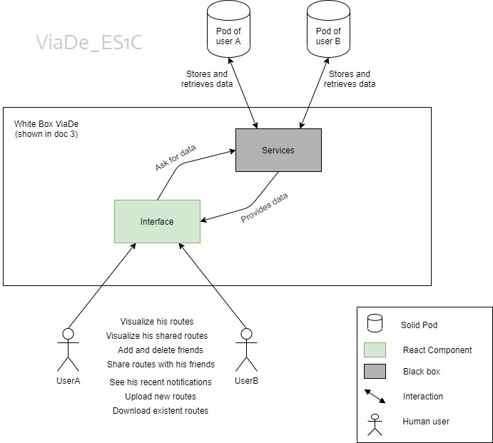
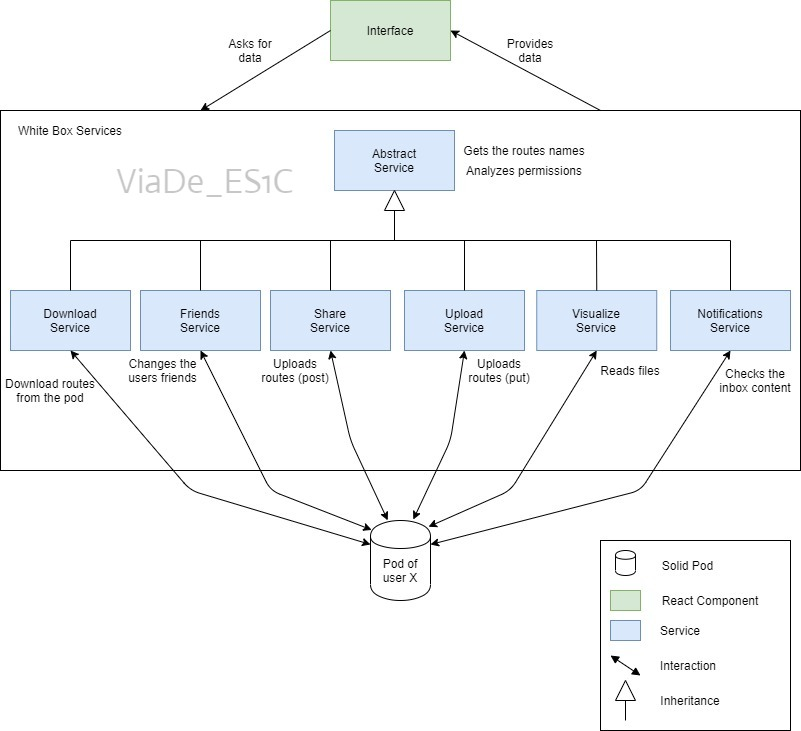

1. Introduction and Goals
1.1. Requirements Overview
1.2. Quality Goals
Ref |
Goal |
Priority |
1 |
Security and privacy: There should be no vulnerable points. |
High, High |
2 |
Independence online: Decentralized architecture in which data is separated from the application |
High, Low |
3 |
Usability: Easy to use by begginers and non-technical users. |
Medium, High |
4 |
Efficiency: Answer’s capacity. |
High, High |
1.3. Stakeholders
Role/Name |
Contact |
Expectations |
Development Team |
Team who creates the application |
Creation of a well-functioning app |
Users |
Non-technical users (amateurs) |
Basic use of the app |
Technical users as hikers |
Use of professional hiking features |
|
Teachers |
Teachers of the subject of ASW |
Supervise the project and make sure that the requirements are accomplish |
Inrupt Team |
Owners of the idea |
Evaluate the result of the final application |
Solid |
Follow Solid specifications |
|
Wikiloc |
Application |
Interoperability with ViaDe |
Leaflet |
Free wiki world map |
Allows visualization of maps |
2. Architecture Constraints
We will divide the restrictions into:
-
Technical constraints
-
Organizational and political constraints
-
Conventions constraints
2.1. Technical constraints
Constraints that have to do with design and implementation decisions
| Constraint | Explanation |
|---|---|
Decentralized system, where data storage will be separated from the application |
For this we will use the Solid PODs. Where customer data will be saved |
Data persistence. Where to save customer data: routes, friends, images, videos, route information |
For this we will also use the Solid PODs |
Using the React framework |
We will use the React JavaScript library for the development of user interfaces. This development environment merges, links the structure of the interface with the logic. |
Interoperability between different route management systems |
The application must be compatible with other route management systems. |
Follow the specification proposed in the GitHub’s ViadeSpec repository |
Try to follow the specifications of the GitHub ViadeSpec repository, to make the application more interoperable. We have followed these specifications until version 1.1. |
Solid Specifications |
Follow Solid specifications |
2.2. Organizational and political constraints
Constraints that have to do with team organization.
| Constraint | Explanation |
|---|---|
Team |
It will work with a team of 6 people |
Time |
Comply with the proposed deadline |
Developing |
The project can be deployed from the repository with Travis. Codecov is also used for code coverage and codacy for code quality. |
2.3. Conventions constraints
Restrictions that have to do with the conventions that the team will agree, for example, programming or versioning guidelines, documentation or naming conventions
| Constraint | Explanation |
|---|---|
Documentation |
The documentation will be done using Ascii-Doctor, Ruby, Node and following the Arc42 structure |
Version control |
Version control will be performed using GitHub |
3. System Scope and Context
Our main objetive is to build a descentralized web, nowadays, descentralization has a lot of limitations that hinder the construction of the system, but it also has positive aspects, like the security and privacity of our personal data.
To achive this main objetive we are using SOLID’s PODS, so our web has to be capable of conecting to SOLID, in this SOLID’s PODS we are going to save all data that we want to share in our web, like our tracks.
Viade will ask user own pod to retrieve user’s tracks and never will save that tracks on the other users' POD.
Viade will have some different interfaces:
3.1. Business Context
| Action | Description |
|---|---|
Log in |
User has to log in using his SOLID credentials |
Share his tracks |
User can upload his new tracks, don’t saved on his SOLID POD |
Visualize tracks |
User can watch his track displayed on a map |
Save new tracks |
ViaDe application will save user’s tracks on his SOLID POD |
Load tracks |
ViaDe application will get user’s tracks that he has saved on his SOLID POD |
Download tracks |
ViaDe application will download and save user’s selected track on the user’s device |
Upload new tracks |
ViaDe application will allow the user to select the track he wants to save on his SOLID POD from his device |
Add/delete friend |
ViaDe application will allow the user to both add and delete users from his friend list |
Store user N’s/A’s shared tracks |
ViaDe application will save the tracks that other users have shared with him in the user’s pod |
Create groups |
ViaDe application will allow the user to create his own friend groups. |
3.2. Technical Context
| Object | Description |
|---|---|
User (A, B) |
Represents the users of the application |
ViaDe |
Decentralized and web based application |
SOLID POD (A, B) |
Individual storage unit for one user |
SOLID (Social Linked Data) |
New web ecosystem |
4. Solution Strategy
To develop the project we are going to use React, based on SOLID specifications.
-
React
-
SOLID
-
Pods
-
Arc42
-
AsciiDoctor
-
Protecting users privacy and security throughtout the development process.
-
Non-complex interfaces following a style guide such as Solid style guide.
-
Taking care of efficiency and concurrency: availability for many users at the same time.
-
Testing the application.
Each component of the team has research about all the technologies and technics. Every week we distributed the work to to for the next class among the components of the group. Furthermore, we have also tried to help each other in difficult tasks or those that raise doubts.
-
Structure: at first we used an inrupt template but later we decided to remove it to improve the structure, in this way, we developed a more decoupled application. On the one hand components and on the other functionalities.
-
ViaDe Specification: since the specification was not done at the beginning, we decided to make our own folder structure in the POD and the JSON structure. Later, when the specification advanced we adapted it to our application (version 1.1). Finally, the application is adapted to the latest version of the specification (more polished version).
5. Building Block View
In this section we are going to dissect the structure of our application, from the most general to the most detailed.
5.1. Level 1
At first, we have a diagram pretty similar to the one exposed at the third point of this documentation. It’s basically a white box. A human user interacts with the interface of the application, this interface asks to the services the information required from the Solid Pod of the current user. As you can see, the services in this diagram are a black box, which will be explained in detail in the next diagram.

Table 1. Explanation of the black boxes
| Name | Responsibility |
|---|---|
Services |
Provides the React components of the interface the information (stored in the user’s pod) required to perform the actions with the routes |
5.2. Level 2
In this level, we are going to explain in detail the Service black box presented in the previous diagram. The box splits in 7 different services. There’s an inheritance relation between Abstract Service and the rest of them. This one, provides the common functionality that is required in the rest of the services. Each concrete one, correspons to a specific feature offered to the user in the interface.

Table 2. Explanation of the services
| Service | Function |
|---|---|
Abstract |
Common functionality related to the POD which is needed in the rest of services |
Download |
Used when the user wants to obtain a route stored in his pod as a file |
Friends |
Used when the user wants to manage his list of friends (add, delete) |
Notifications |
Used when the user wants to interact with his notifications |
Share |
Used when the user wants to share one of his routes (with all its multimedia) with one of his friends |
Upload |
Used when the user wants to add a new route to his collection |
Visualize |
Used when the user wants to view one of his routes (or a shared one) |
6. Runtime View
6.1. First Scenario: Login
6.1.1. Login flowchart
6.1.2. Login runtime in detail
Although it’s a basic scenario, it’s one of the most important scenarios due to, if a user is not logged in, he could not use the app.
-
User opens the app at any browser. And there are two possibilities:
-
User is already logged in, so he can use de app.
-
User is not logged in, he can just click on "Login" and a popup will appear.
-
If user has a solid account, he can select which provider does he want to use to log in and fill the login form, introducing his solid credentials.
-
If user has not a solid account, he can register and create a personal POD. Then he will be able to log in introducing the entered information in the register form.
-
-
User will be redirected to the main UI, where he can see some of his data and a slight introduction to our app.
-
6.2. Second Scenario: Visualize tracks and media
6.2.1. Visualize tracks and media flowchart
6.2.2. Visualize tracks and media runtime in detail
This scenario is probably the second most important scenario, behind of login scenario, because it’s represents the main objective of our app, is the basis on which the rest of the app’s functionalities are developed
-
User logs in to the app.
-
User goes to "visualize tracks" section.
-
User selects if he wants to visualize his own tracks or other user’s tracks that have been shared with him.
-
User clicks on "Load tracks from POD".
-
If user selected visualize his own tracks
-
If folder "viade/routes" does not exist on user’s pod, app will show an error to the user.
-
If user pod’s folder "viade/routes" is empty, app will show a warning to the user.
-
If folder "viade/routes" exist and it’s not empty then the combo will be filled with the tracks uploaded in that folder.
-
-
If user selected visualize other user’s tracks.
-
If folder "viade/shared" does not exist on user’s pod, app will show an error to the user.
-
If user pod’s folder "viade/shared" is empty, app will show a warning to the user.
-
If folder "viade/shared" exist and it’s not empty then the combo will be filled with the tracks uploaded in that folder.
-
-
-
User clicks on "Visualize".
-
If user has not loaded his tracks from pod, app will not allow the user to click on visualize.
-
If user has loaded his tracks from pod.
-
If app can not read the track, app will show an error to the user.
-
If app can read the track but, app or user has not permissions to access media content, app will show an error to the user, but it will paint the track on the map.
-
If app can read the track and all permissions are good, then app will paint the track on the map and show all track’s media content.
-
-
-
User logs out.
6.3. Third Scenario: Share tracks
6.3.1. Share tracks flowchart
6.3.2. Share tracks runtime in detail
Although this scenario is not the essential one of the app, it represents another of the basic and important requirements that the app should meet.
-
User logs in to the app.
-
User selects "share tracks" section.
-
User selects with whom he wants to share, "Friends" or "Groups".
-
User clicks on "Upload tracks and contacts".
-
If user has selected "Friends".
-
User selects:
-
The track that he wants to share.
-
The added friend with whom he wants to share.
-
-
-
If user has selected "Groups".
-
User selects:
-
The track that he wants to share.
-
His friend group with whom he wants to share.
-
-
-
User clicks on "Share".
-
If user does not select any friend or friend group to share with, the app will show an error to the user.
-
If user does not select any track to share, the app will show a warning to the user and not shares the track.
-
If user has already shared that track with that friend or with a friend who belongs to the selected group, then the app will show a warning to the user.
-
If something was wrong during the creation of the file in friend’s pod, app will show an error to the user.
-
If everything was good and there were any problems then the app will show a notification of success to the user and share the track with his selected friend.
-
-
User logs out.
6.4. Fourth Scenario: My Friends
6.4.1. My Friends flowchart
6.4.2. My Friends runtime in detail
This scenario is not a primordial or main scenario for the app as a whole, but it is completely essential for the correct functioning of the previous one, because in order to share routes it is necessary for the user to have friends added.
-
User logs in to the app.
-
User selects "my friends" section.
-
User focuses on "My friends" box.
-
User can add a new friend or delete an existing friend.
-
If user wants to add a new friend.
-
User has to enter the webid of the user who wants to add.
-
If user has not entered the webid of the user how wants to add then, the app will show an error to the user.
-
If user has entered an invalid or non-existent webid, the app will show an error to the user.
-
If user has entered a webid of an existing friend, the app will show an error to the user.
-
If app does not have permissions to add a new friend, then it will show an error to the user.
-
If everything was good the app will add the new friend to user’s friend list.
-
-
If user wants to delete an existing friend.
-
User has to select the webid of the user that he wants to remove from his friends list.
-
If user has not selected the webid of the user that he wants to remove, the app will show an error to the user.
-
If app does not have permissions to delete an existing friend, then it will show an error to the user.
-
If everything was good the app will delete the other user from user’s friend list.
-
-
User logs out.
6.5. Fifth Scenario: My groups
6.5.1. My groups flowchart
6.5.2. My groups in detail
This scenario is not an essential scenario for the basic operation of the app, but it will allow us to create friend groups to share routes with them.
-
User logs in to the app.
-
User selects "my friends" section.
-
User focuses on "My groups" box.
-
User has to enter the group’s name.
-
User has to select the friends he wants to invite to the group.
-
User clicks on "Create a new group".
-
If user has not entered the group’s name, then the app will show an error to the user.
-
If user has not selected any friend, then the app will show an error to the user.
-
If app does not have permissions to create a new group, then it will show an error to the user.
-
If everything was good the app will add a new friend group.
-
-
User logs out.
6.6. Sixth Scenario: My Notifications
6.6.1. My Notifications flowchart
6.6.2. My Notifcations in detail
This scenario is not an essential scenario within the app, but it allows us to see the notifications we have received when a user has shared a route with us or has added or removed us from his friends list.
-
User logs in to the app.
-
User selects "my notifications" section.
-
App will show the user how many notifications he has currently.
-
User can view all his notifications and filter them if he wants.
-
If user has not any notifications, the app will show a message saying "No notifications available".
-
If user wants to filter his notifications.
-
User has to enter the criteria by which he wants to filter in the box.
-
User has to click on "Search".
-
App will show the notifications that match the entered filter to the user.
-
If the filter criteria do not match any notification, app shows an error.
-
-
User logs out.
6.7. Seventh Scenario: Upload tracks
6.7.1. Upload tracks flowchart
6.7.2. Upload tracks in detail
This scenario would be a complementary scenario to all the others and at the same time an essential scenario to develop all the functionality of the app, because we could not visualize, share tracks, etc. If we could not upload them to our POD.
-
User logs in to the app.
-
User selects "Upload tracks" section.
-
User clicks on "Select files".
-
User selects the track or tracks that he wants to upload from his device.
-
User clicks on "Upload".
-
If user has not selected any tracks from his device, app will show him an error.
-
If user has selected a file with an invalid extension, app will show him an error.
-
If there was any problem during the upload operation, app will show an error to the user.
-
If there was not any problem during the upload operation, app will upload the track or tracks selected to user’s POD and show the user a success notification.
-
-
User logs out.
6.8. Eighth Scenario: Download tracks
6.8.1. Download tracks flowchart
6.8.2. Download tracks in detail
This scenario is not a scenario actually required by the requirements, but it is an additional scenario that can add quite useful functionality to the app. With this scenario, what is achieved is to download a track stored in the POD to the device used by the user.
-
User logs in to the app.
-
User selects "Download tracks" section.
-
User clicks on "Load tracks from POD".
-
User selects the track he wants to download.
-
User clicks on "Download".
-
If user has not loaded his tracks from his POD, app will show him an error.
-
If there was any problem during the download operation, app will show an error to the user.
-
If there was not any problem during the download operation, app will download the selected track to user’s device.
-
-
User logs out.
7. Deployment View
As it is a decentralized app, we are basically focused on the interaction between the user and the Solid platform. Users interact with the platform by the POD and every user has a unique one where it’s data is stored. So, a user that is using ViaDe, is interacting with Solid and this is taking the data from the corresponding PODs in order to make the app work in an efficient way.
8. Cross-cutting Concepts
8.1. Security
All the components are wrapped up in a LoggedIn label that makes sure the different sites of the application can not be accessed if you have not registered before. All the user information is stored in the pod, so that only the own user has access to it.
8.2. Patterns
We have use a MVC structure, separatting the application into services (they have the functionality of the application), and components (that mix the View part with the Model one). We have wanted to use this architectural pattern in order to be able to distinguish the appearance, the business (logic) and the persistance.
8.3. Stability and Change
As we have said in the previus point we are using a MVC structure that also allows and makes easier to make changes or increase the functionality
8.4. Usability for the users
Our application is made in order to make the user easier the navigation through the web. We tried successfully to achieve the lowest waiting times we could in the whole app. The application is internationalized in two languages, Spanish and English.
8.5. Test
We have divided the tests into automatic and unit tests. In this way we test many more things of the application. On the other hand we have also made load testing with gatling.
8.6. Transactional
Using the Solid Pods we have managed to communicate with the Pod fulfilling the ACID(atomicity, consistency, isolation, durability) properties.
8.7. Folder Structure
9. Design Decisions
10. Quality Requirements
10.1. Quality Tree
10.2. Quality Scenarios
The following quality scenarios are studied in a global way, since as it has not yet entered into details of implementation can not be made more specific yet. The priority column contains two values, the first for the development team and the second for the client.
| Quality | Scenario | Priority |
|---|---|---|
Privacy |
Use a Solid PODs and Solid specifications |
High, High |
Accesibility |
The application must be accessible to all people |
High, High |
Availability |
The application must be accessible at any time |
High, High |
Interoperability |
Interoperability between different route management systems |
High, High |
Robustness |
Robustness in terms of the number of users that will operate on it |
High, High |
Robustness |
Robustness in terms of persistence |
High, High |
Security |
Data security with Solid PODs |
High, High |
Security |
Access control, the application must have a strong access control to avoid bad practices |
High, Low |
Efficiency |
The application must respond in less than two seconds to make it more dynamic (except notifications panel, which will depend on the number of them) |
High, High |
Efficiency |
The application must upload and download routes in less than two seconds |
Medium, High |
Simplicity |
Application with a simple interface |
Medium, High |
Simplicity |
Easy to use application for the user without prior knowledge |
Medium, High |
Maintainability |
Maintainable and upgradeable, making use of good designs |
High, Low |
Usability |
The application must be easy to use, intuitive for inexperienced users |
Medium, High |
Testability |
Exhaustive tests that verify the perfect operation of the application before being launched |
High, Low |
11. Risks and Technical Debts
In this page we are trying to show some of the problems we think that we will have to face during the system’s develop and how we plan to solve or fix them.
11.1. Risks and measures to solve them
| Risk | Measures |
|---|---|
SOLID: It’s a new world for us, we’ve never work with SOLID and we are not used to use it in our daily life, because it’s a really new technology. |
We are trying to learn and search information on internet about SOLID, as much as possible, before starting code ViaDe application. |
REACT JS: We have a basic level of Javascript and this web framework use several concepts that we don’t know very much, so it can bring to us some problems, like the REACT’s components. |
We can take several online courses about REACT and using the well-known web page "Stackoverflow" to solve some individual doubts. Finally make our own REACT projects to know and get used to this new web framework. |
English: It’s not our native language so we find several difficulties to express some parts of the document, specifically, technical language, there might be some errors, our apologies for that. |
According to the difficulties that English bring us, we are trying to use English dictionaries or online translators. |
NODE JS: We will find some difficulties on managing node libraries, dependencies and asynchronous operations. |
We can take several online courses about NODE and using the well-known web page "Stackoverflow" to solve some individual doubts. |
LEAFLET: We have previously worked with the Google Maps API, but never with Leaflet, so we will have certain difficulties and we will have to inform ourselves properly and read the documentation. |
We can obtain sample code from different platforms ("Github", "Stackoverflow") to learn how to use the library Leaflet. |
RDF AND LINKED DATA: There aren’t much libraries to manage Linked Data and RDF resources. It is difficult to find them and use them, so we will have difficulties. |
To solve the difficulties with RDF and Linked data we have attended the SOLID talk (given by Empathy.co), that was held in the EII. They have provided us different tutorials and useful knowledge (e.g. libraries like ldflex or rdflib) to overcome them. |
POD Disponibility: The pod may not be available if the provider falls (SOLID COMMUNITY, INRUPT) or the Internet is missing |
It could be divided into several pods (having to ensure consistency), but it does not apply to us. |
12. Glossary
| Term | Definition |
|---|---|
ACID (atomicity, consistency, isolation, durability) |
Is a set of properties of database transactions intended to guarantee validity. |
Asciidoctor |
Is a human-readable document format, semantically equivalent to DocBook XML, but using plain-text mark-up conventions. AsciiDoc documents can be created using any text editor and read "as-is", or rendered to HTML or any other format supported by a DocBook tool-chain, i.e. PDF, TeX, Unix manpages, e-books, slide presentations, etc. [Official Website: https://asciidoctor.org/] |
Arc 42 |
Template divided in 12 sections for architecture communication and documentation [Official Website: https://arc42.org/] |
Codacy |
Automatically identify issues through static code review analysis. Get notified on security issues, code coverage, code duplication, and code complexity in every commit and pull request, directly from your current workflow. [Official Website: https://www.codacy.com/] |
Codecov |
Codecov provides highly integrated tools to group, merge, archive, and compare coverage reports. [Official Website: https://codecov.io/] |
Cucumber |
Cucumber is a software tool that supports behavior-driven development (BDD). [Official Website: https://cucumber.io/] |
Docker |
Docker is a tool designed to make it easier to create, deploy, and run applications by using containers. [Official Website: https://www.docker.com/] |
Gatling |
Open source software designed to be used as a load testing tool for analyzing and measuring the performance of a variety of services, with a focus on web applications. [Official Website: https://gatling.io/] |
JavaScript |
JavaScript often abbreviated as JS. Is a high-level interpreted programming language, that conforms to the ECMAScript specification |
Jest |
Jest is a delightful JavaScript Testing Framework with a focus on simplicity. [Official Website: https://jestjs.io/] |
Leaflet |
Leaflet is the leading open-source JavaScript library for mobile-friendly interactive maps. [Official Website: https://leafletjs.com/] |
OpenStreetMap API |
OpenStreetMap (OSM) is a collaborative project to create a free editable map of the world. OpenStreetMap has an editing API for fetching and saving raw geodata from/to the OpenStreetMap database [Official Website: https://www.openstreetmap.org] |
Puppeteer |
Puppeteer is a Node library which provides a high-level API to control Chrome or Chromium over the DevTools Protocol [Official Website: https://pptr.dev/] |
React JS |
Is a JavaScript library for building user interfaces. It is maintained by Facebook and a community of individual developers and companies [Official Website: https://reactjs.org] |
RDF |
Resource Description Framework is a specification that defines how metadata, or descriptive information, should be formatted. This means the data can be transmitted in various syntaxes like JSON-LD (JSON with a "context") |
Solid |
Derived from "social linked data", is a proposed set of conventions and tools for building decentralized social applications based on Linked Data principles [Official Website: https://solid.mit.edu/] |
Solid POD |
Derived from "Personal Online Data", it’s user’s personal storage space, user decides which things apps and people can see. [Official Website, where you can get a POD: https://solid.inrupt.com/get-a-solid-pod] |
Travis |
Travis CI enables your team to test and ship your apps with confidence. Easily sync your projects with Travis CI and you’ll be testing your code in minutes. [Official Website: https://travis-ci.org/ ] |
WebStorm |
Integrated Development Environment created by JetBrains used for JavaScript development. [Official Website: https://www.jetbrains.com/es-es/webstorm/ ] |
About arc42
arc42, the Template for documentation of software and system architecture.
By Dr. Gernot Starke, Dr. Peter Hruschka and contributors.
Template Revision: 7.0 EN (based on asciidoc), January 2017
© We acknowledge that this document uses material from the arc 42 architecture template, http://www.arc42.de. Created by Dr. Peter Hruschka & Dr. Gernot Starke.